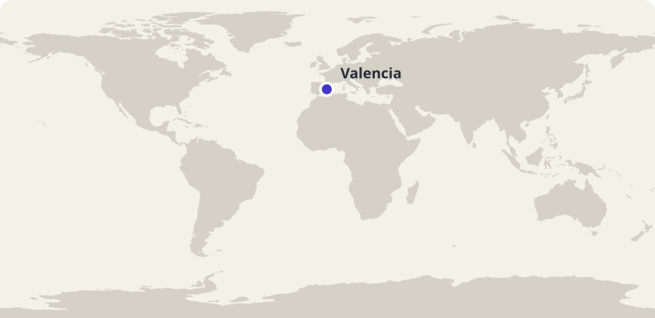
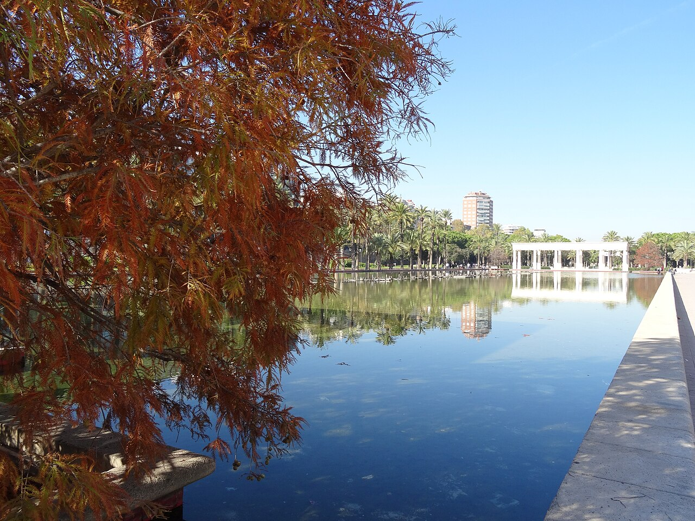

Arbeidsutkast · til lærervurdering
45 minutter · les, oversett og sammenlign
Spania: Un día en Valencia
En ettermiddag med Álex: sykkel, grønne rom og horchata.
Bli med Álex gjennom en dag i Valencia. Les høyt og oversett muntlig i par. Svar på spørsmålene, snakk om hverdagslivet og øv på ordene fra teksten. Álex og familien er fiktive; stedene og kulturinnslagene bygger på kildene nedenfor.

Valencia i Spania. Kartgrunnlag: Natural Earth. Markøren viser byens omtrentlige plassering.
Les og oversett i par
- Les teksten høyt sammen. Bytt på å lese ett avsnitt hver.
- Oversett ett avsnitt om gangen muntlig til norsk. Pek eller trykk på understrekede ord når dere trenger hjelp.
- Hjelp hverandre med ord og setninger dere er usikre på.
Pek eller trykk på understrekede ord i teksten for å se norsk oversettelse. Numrene i bildene viser bildeord.
Europa · Middelhavet
Un día en Valencia

Bildet kunne ikke lastes. Du kan fortsatt lese teksten og bruke ordoppslagene.
Om bildet
Horchateria de Santa Catalina en Valencia.jpgDato: 2008Commons-versjon med justerte fargenivåer, nedskalert; ikke beskåret. Nummererte ordpunkter lagt over bildet.
- la horchata en søt, kald drikk laget av jordmandler
- los fartons søte, avlange bakverk
- la cuchara skjeen
Álex, y en Valencia, una ciudad de de España. Hoy y . Después y . Mi madre . agua y , porque durante .
el Jardín del Turia. Este parque de que ahora sigue . En lugar del agua, aquí , y para jugar o . Vemos personas que , familias que y otros . cuando hay mucha gente .

Om bildet
20151119 054 Valencia - Jardín del Turia (22917615359).jpgDato: 2015Nedskalert av Commons; ikke beskåret.
. veo y edificios de . Me gusta que una ciudad pueda cambiar y partes de su historia. el cuaderno y dibujo del puente. Mi madre me pregunta este lugar con .
vamos a . Yo de y mi madre prueba un poco. La valenciana con , . Es una bebida que se suele tomar . La acompañamos con unos , . es nuevo para una amiga que viene a visitarnos, así que quiero que lo pruebe.
Por la tarde nos con . Él y nosotros las bicicletas un momento. Hablamos de música y de . propone hacer sobre los de la ciudad. Yo puedo llevar mi dibujo del puente y explicar por qué este parque es importante para mí.
, el cuaderno y las fotos. En Valencia hay muchas formas de pasar el tiempo, y esta es una de nuestras favoritas. Hoy no necesitamos salir de la ciudad para disfrutar . Me gusta terminar el sábado con una idea sencilla: conocer mejor un lugar también significa lo que tenemos .
Faktakilder: Visit Valencia: Jardín del Turia · Visit Valencia: La horchata. Vis til teksten når du begrunner svarene.
Spørsmål til teksten
Velg ett svar på hvert spørsmål.
Utforsk kultur
Sammenlign og spør
- På hvilke måter ligner Álex sin ettermiddag på en tur på et sted du kjenner?
- Hvordan brukes grøntområder i Valencia og på et annet sted du kjenner?
- Hva synes du om å gjøre et tidligere elveleie om til en park?
- Hvilken del av turen ville du anbefalt til en besøkende?
Åpne spørsmål har flere rimelige svar. Lytt til partnerens begrunnelse.
Bruk språket i par
Planlegg en ettermiddag i en by. Velg et grøntområde, en aktivitet og en pause. Presenter planen med tre spanske setninger.
Prøv en utvidelse
Gi et kort råd til en som skal besøke Valencia.
Ord du kan bruke videre
Øv på de ti ordene fra teksten. Prøv å huske svaret før du snur kortet.
Lær Spania-gloseneValgfritt glosesett: Spania: Un día en Valencia. Kom tilbake og repeter ordene. I glosemodus vises det når ordene er klare for repetisjon.
Se de ti ordene
| Spansk | Norsk |
|---|---|
| la bicicleta | sykkel |
| el puente | bro |
| el río | elv |
| el parque | park |
| el árbol | tre |
| el vaso | glass |
| frío/fría | kald |
| caminar | å gå til fots |
| cerca | i nærheten |
| la horchata | horchata |
Dekk den spanske kolonnen. Si ordet før du sjekker. Bytt deretter retning og øv på ordene du er usikker på.
| Spansk | Norsk |
|---|---|
| la bicicleta | sykkel |
| el puente | bro |
| el río | elv |
| el parque | park |
| el árbol | tre |
| el vaso | glass |
| frío/fría | kald |
| caminar | å gå til fots |
| cerca | i nærheten |
| la horchata | horchata |